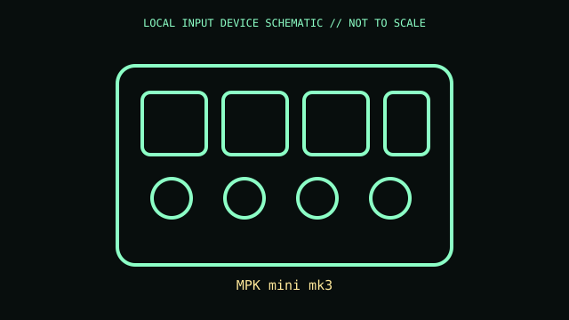

[ SPECIALIZED INPUT CONTROLLERS // IDENTIFIED COMPONENT ]
Akai Professional MPK mini mk3
Compact USB MIDI controller combining mini keys, drum pads, encoders, and joystick.

MODEL IDENTIFICATION: MPK mini mk3. Confirm the printed SKU, revision, bundle, region, and supplied accessories before repair or compatibility claims.
Model specifications
| Catalog leaf | Specialized input controllers |
|---|---|
| Exact model / identifier | MPK mini mk3 |
| Physical mechanism and primary specifications | 25 velocity-sensitive mini keys; eight velocity-sensitive pads; eight assignable knobs; four-way joystick; USB bus power and MIDI-over-USB. |
| Compatibility and interface caveats | Requires DAW or instrument software for sound; preset editing uses Akai software. mk3 is distinct from MPK mini Play and later Plus. |
| Revision identification | Record complete product label, revision, region, and accessories. Similar family names may differ in protocol, connector, feature set, and host requirements. |
Preservation and service
Preserve USB cable/preset files; avoid liquid around pad/knob assemblies and store without loads on keys.
Record observed condition, accessories, host OS, driver/app version, and test conditions separately from vendor specifications.
Primary manufacturer sources
- Akai MPK mini mk3 productManufacturer documentation; verify exact PID and regional/revision markings against the physical unit.
- Akai MPK mini mk3 supportManufacturer documentation; verify exact PID and regional/revision markings against the physical unit.
Retain the applicable manual with the equipment record; manufacturer support pages and software availability may change.